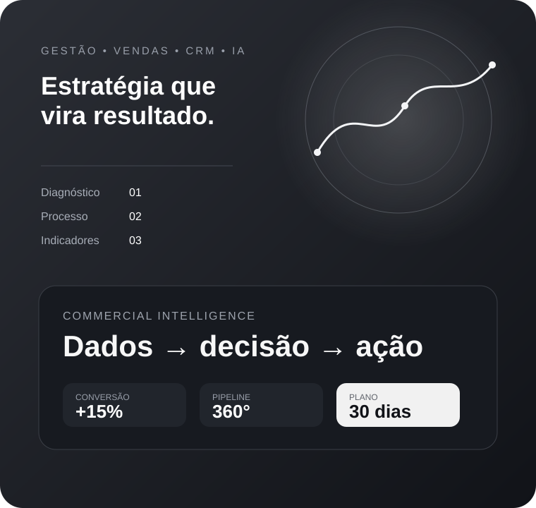

Estratégia
Comercial
Conteúdo aprofundado para gestores e empresas que querem transformar ações comerciais em processos claros, decisões melhores e crescimento previsível.

Estratégia com método.
Resultado com clareza.
Um negócio comercialmente forte não depende apenas de mais tráfego ou mais vendedores. Ele precisa de processo, acompanhamento, dados e decisões consistentes.
Este blog organiza temas complexos de gestão comercial em materiais práticos, aplicáveis a diferentes segmentos, com foco em diagnóstico, execução, melhoria de conversão, produtividade e previsibilidade.
Começar pelo guia principal ↗Conhecimento para
decidir e executar.
Três pontos centrais para revisar uma operação comercial: diagnóstico, estrutura e inteligência.
Onde sua empresa está perdendo resultado?
Antes de aumentar mídia ou equipe, identifique os gargalos entre entrada do lead, atendimento, proposta e fechamento.
Os 7 pilares da operação comercial
Cliente ideal, geração de demanda, atendimento, CRM, follow-up, indicadores e transformação de dados em ações.
Dados que realmente viram decisão
Indicadores precisam mostrar prioridades, orientar ações e sustentar um processo contínuo de melhoria.
Uma visão integrada
da operação.
Os temas foram organizados para conectar estratégia, processo, tecnologia e experiência do cliente.
Gestão comercial
Processos, metas e prioridades alinhadas ao resultado.
CRM
Pipeline, histórico, follow-up e previsibilidade.
Conversão
Melhoria das etapas que transformam oportunidade em venda.
Inteligência artificial
Automação e produtividade sem substituir estratégia.
Experiência
Menos atrito para facilitar a jornada de compra.
Previsibilidade
Pipeline e histórico para planejar faturamento.
O que precisa estar no radar da gestão.
Leitura organizada
por necessidade.
Diagnosticar. Organizar.
Medir. Otimizar.
Uma sequência objetiva para iniciar a organização comercial sem tentar corrigir tudo ao mesmo tempo.
Diagnóstico
Leads, vendas, ticket médio, faturamento, canais, conversão e perdas.
Organização
Funil, responsáveis, SLA de atendimento, CRM e política de follow-up.
Indicadores
Dashboard com oportunidades, propostas, vendas, CAC e previsões.
Otimização
Escolha os maiores gargalos, execute ações e acompanhe a evolução.
Transforme informação
em ação comercial.
Use o guia completo para revisar sua operação, identificar gargalos e construir um processo orientado por dados, acompanhamento e resultado.
Acessar conteúdo completo ↗